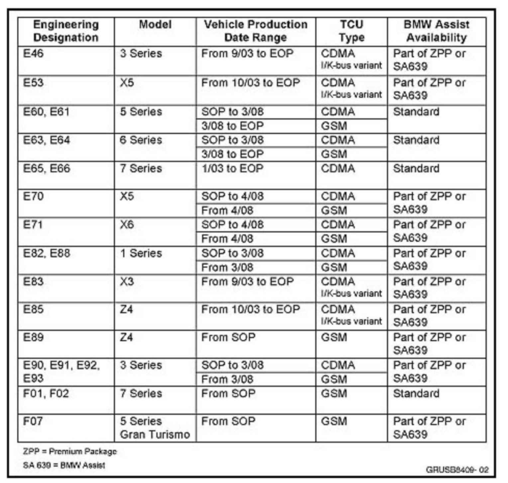

Telematics(R) - CDMA Telematics Control Unit Replacement
SI B84 02 12Communication Systems
October 2012
Technical Service
This Service Information bulletin supersedes SI B84 02 12 dated May 2012.
[NEW] designates changes to this revision
SUBJECT
CDMA Telematics Control Unit (TCU) Replacement Procedure
MODEL
All equipped with a CDMA TCU and BMW Assist (option 639) or Premium Package (ZPP)

Refer to the chart above to verify that a CDMA TCU is installed in the vehicle being repaired. Confirm the model and the production date.
INFORMATION
All CDMA (Code Division Multiple Access) replacement units from parts are deactivated and must be activated before handing over the vehicle to the customer. This is not related to the customers BMW Assist account status being active. In order for BMW Assist to work properly, the replacement procedure outlined below must be carried out.
PROCEDURE
1. [NEW] Verify the account status by calling 1-888-333-6118, option 4.
^ If the account is still active, proceed to step 2.
^ If the account has expired, contact the customer and advise him/her of his/her Assist account status. If he/she would like to reenroll in BMW Assist Services, a new ESA agreement must be completed. Also, refer to SI B84 22 05 to reactivate the TCU.
2. [NEW] Prior to the technician receiving the replacement CDMA TCU, he must verify the following:
^ The Parts Manager has already activated the replacement CDMA TCU via DCSnet as per SI B84 03 11.
^ The new MIN (Mobile Identification Number) and MDN (Mobile Directory Number) are provided to him by the Parts Manager.
Note:
After entering the ESN number, it may take approximately 30 minutes for the new MIN and MDN numbers to be displayed in DCSnet.
3. [NEW] Install, program, and code the replacement TCU using ISTA/P.
4. [NEW] The new MIN and MDN numbers must be written into the TCU as follows:
^ Select "Activities / Service function / Body / Telecommunications / TCU Telematics control unit / Re-enabling BMW Assist / Start Search."
^ Perform test plan "S8400_00016 - Re-enabling BMW Assist TCU 1.5 Most" to write the new MIN and MDN numbers into the replacement TCU.
5. Refer to SI B84 15 03 to perform the "Initialization of the BMW Assist Services."
6. Perform a test call using the SOS button to verify the system is functioning correctly. Verify that Assist receives both the voice and data transmission.
WARRANTY INFORMATION
Not applicable